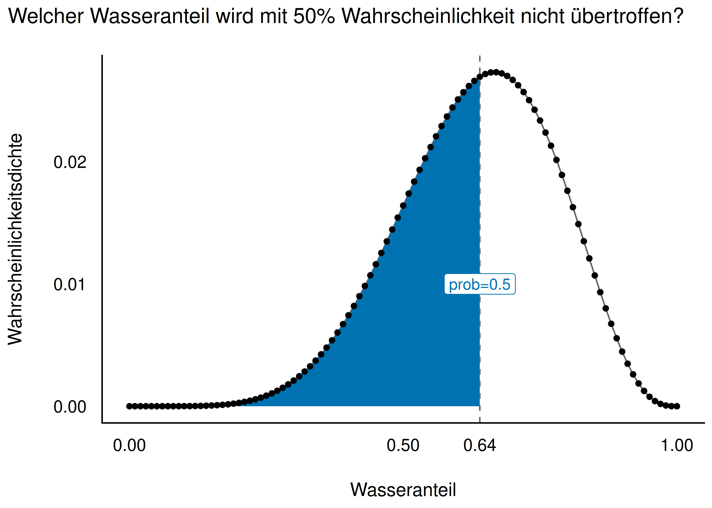
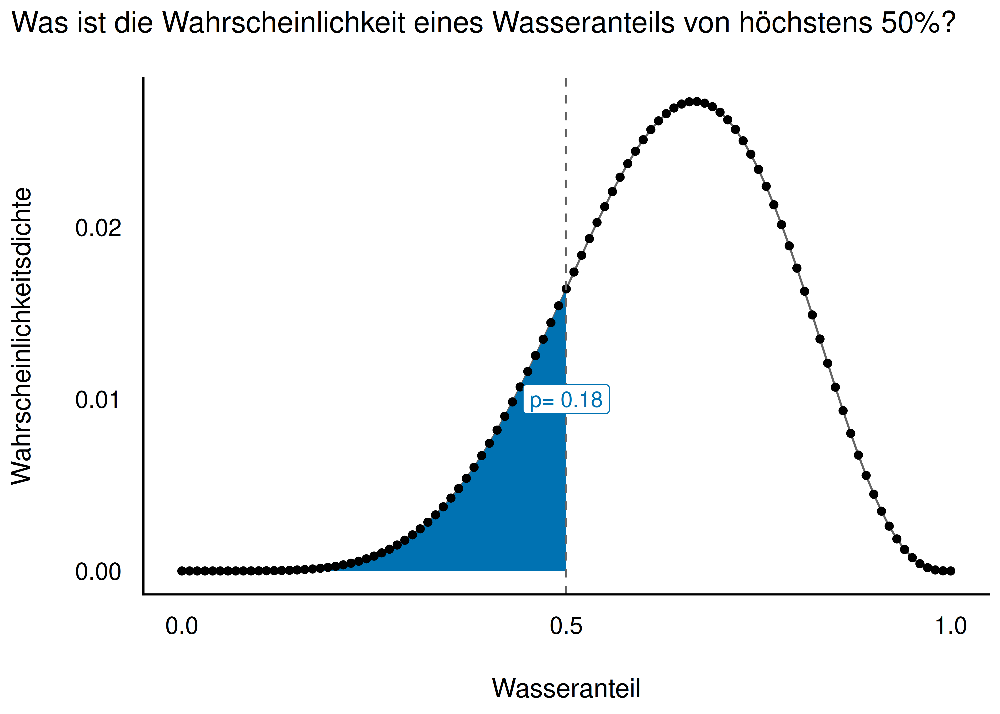
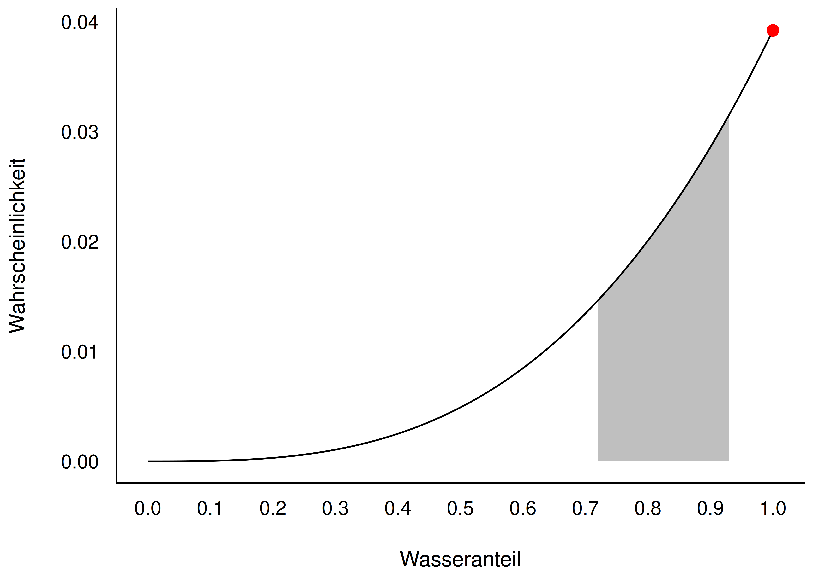
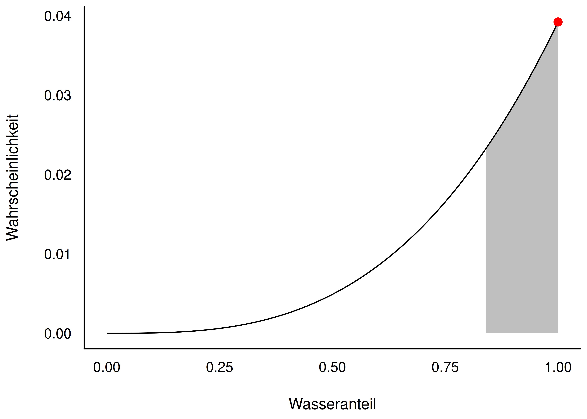

Start:Bayes!
Die Post befragen
Die Post befragen
Kapitelthema: Wie wir die Posteriori-Verteilung auslesen und zusammenfassen.
Lernziele
Nach diesem Kapitel können Sie …
- die Post-Verteilung anhand einer Stichprobenverteilung auslesen
- Fragen nach Wahrscheinlichkeitsanteilen der Post-Verteilung beantworten
- Fragen nach Quantilen der Post-Verteilung beantworten
- die Post-Verteilung mit R visualisieren
- Schätzbereiche (Konfidenzintervalle) bestimmen: Perzentilintervalle und Highest Density Intervals (HDI)
Begleitliteratur: McElreath (2020), Kap. 3.1 und 3.2
Zur Erinnerung: Bayesbox in R berechnen
Zur Erinnerung: Die Bayesbox
- Die Bayesbox (“Gittermethode”) berechnet die Posteriori-Verteilung
- Die Post-Verteilung ist das zentrale Ergebnis einer Bayes-Analyse
- Beispiel: Globusversuch mit \(W=6\) Wasser bei \(N=9\) Würfen, \(g=11\) Gitterwerte (0 bis 1, Schritte von 0.1)
Bei Apriori-Indifferenz entsprechen die Posteriori-Wahrscheinlichkeiten den Likelihoods — das Maximum liegt bei \(6/9 = 2/3\).
Zur Erinnerung: Bayesbox in R berechnen
Die Bayesbox als Grafik
{kind=link}
Zur Erinnerung: Bayesbox in R berechnen
Bayesbox automatisiert
- Die Berechnung lässt sich als Funktion
bayesbox()bündeln - Verfügbar im R-Paket
prada(pak::pak("sebastiansauer/prada")) - Aufruf:
bayesbox(hyps = p_grid, priors = 1, liks = L) - Argumente:
hyps(Parameterwerte),priors(Priori-Werte),liks(Likelihoods)
Zur Erinnerung: Bayesbox in R berechnen
Grenzen der Bayesbox
- Für einfache Modelle funktioniert die Bayesbox gut
- Bei einer Regression mit Parametern \(\beta_0, \beta_1, \sigma\): je 10 Ausprägungen \(\rightarrow\) \(10 \cdot 10 \cdot 10 = 10^3\) Zeilen
- Bei 100 Ausprägungen: \(100^3 = 10^6\) Zeilen
- Bei 10 Parametern mit je 100 Ausprägungen: \(10^{100}\) Zeilen — unmöglich zu berechnen
Wir brauchen eine andere Lösung.
Zur Erinnerung: Bayesbox in R berechnen
Mit Stichproben die Post-Verteilung zusammenfassen
Der Trick: Häufigkeiten statt Wahrscheinlichkeiten
- Komplexere Bayes-Modelle lassen sich nicht mehr exakt ausrechnen
- Lösung: Wir arbeiten mit Stichproben (Häufigkeiten) statt mit exakten Wahrscheinlichkeiten
- In der Praxis übernehmen das Monte-Carlo-Markov-Ketten-Verfahren (MCMC), z. B. der R-Golem Stan (Paket
rstanarm) - Wie MCMC im Detail funktioniert, ist nicht Gegenstand dieses Kurses — wir wenden es einfach an
Mit Stichproben die Post-Verteilung zusammenfassen
Stichproben aus der Post-Verteilung ziehen
- Aus der Bayesbox
bayesbox_6w_9vziehen wir \(n=10\,000\) Stichproben - Gewichtet nach der Posteriori-Wahrscheinlichkeit (
weight_by = post) - Mit Zurücklegen (
replace = TRUE), damit die Wahrscheinlichkeiten konstant bleiben
Ab jetzt arbeiten wir überwiegend mit Post-Verteilungen auf Stichprobenbasis, weil das für komplexere Modelle nötig wird.
Mit Stichproben die Post-Verteilung zusammenfassen
Stichproben-Bayesbox als Balkendiagramm
{kind=link}
- Wasseranteile zwischen ca. 50 % und 70 % sind am wahrscheinlichsten
- Kleine Anteile (z. B. 25 %) sind nicht ausgeschlossen
- Die Stichprobenverteilung nähert sich gut an die exakte Bayesbox-Verteilung an
Mit Stichproben die Post-Verteilung zusammenfassen
Feineres Gitter: g = 100
{kind=link}
- Exakte Post-Verteilung (Linie) und Stichproben-Post-Verteilung (Histogramm) stimmen gut überein
- Zentrale Tendenz: ca. 70 % Wasseranteil ist der “typische” Wert
- Das Modell zeigt deutliche Streuung — es ist sich nicht sehr sicher
Hinweis
Mehr Stichproben und mehr Gitterwerte glätten die Stichproben-Post-Verteilung.
Mit Stichproben die Post-Verteilung zusammenfassen
Eine Million Stichproben
{kind=link}
- Bei symmetrischer Verteilung liegen Modus, Mittelwert (MW) und Median (Md) eng beieinander
- Je mehr Stichproben, desto glatter die resultierende Verteilung
Mit Stichproben die Post-Verteilung zusammenfassen
Die Post-Verteilung befragen
Zwei Arten von Fragen an die Post
Wichtig
Die Post-Verteilung ist das zentrale Ergebnis einer Bayes-Analyse. Wir können viele nützliche Fragen an sie stellen.
Zwei Arten von Fragen:
A. Fragen nach Wahrscheinlichkeiten (p) B. Fragen nach Parameterwerten (Quantilen, q)
Die Post-Verteilung befragen
Beispiele für Fragen an die Post-Verteilung
A. Nach Wahrscheinlichkeiten (p):
- Mit welcher Wahrscheinlichkeit liegt der Parameter unter/über einem bestimmten Wert?
- Mit welcher Wahrscheinlichkeit liegt der Parameter zwischen zwei Werten?
B. Nach Parameterwerten (Quantilen, q):
- Welcher Wert wird mit 95 % Wahrscheinlichkeit nicht überschritten?
- Welcher Parameterwert hat die höchste Wahrscheinlichkeit?
- Wie ungewiss ist das Modell über die Parameterwerte?
Die Post-Verteilung befragen
p vs. q — der Unterschied


- q-Frage: Welcher Wasseranteil wird mit gegebener Wahrscheinlichkeit p nicht überschritten? (gesucht: Parameterwert)
- p-Frage: Wie wahrscheinlich ist ein Wasseranteil von höchstens q? (gesucht: Wahrscheinlichkeit)
Die Post-Verteilung befragen
Fragen nach Wahrscheinlichkeiten (p)
Forschungsfrage: Wie groß ist die Wahrscheinlichkeit, dass der Wasseranteil unter 50 % liegt?
- Wir zählen, wie viele Stichproben die Bedingung erfüllen
- Und teilen durch die Gesamtzahl der Stichproben
Ergebnis: ca. 10 % Wahrscheinlichkeit für einen Wasseranteil unter 50 %.
Die Post-Verteilung befragen
Weitere p-Fragen
Wie wahrscheinlich liegt der Wasseranteil zwischen 0.5 und 0.75?
Wie wahrscheinlich liegt der Wasseranteil zwischen 0.9 und 1?
- Ergebnis: sehr unwahrscheinlich, dass der Wasseranteil mindestens 90 % beträgt
Die Post-Verteilung befragen
Modus, Mittelwert, Median der Post
- Modus (häufigster/wahrscheinlichster Wert):
map_estimate()— MAP = Maximum Aposteriori - Mittelwert:
mean(p_grid) - Median:
median(p_grid)
Alle drei sind Punktschätzer der Post-Verteilung und liegen bei symmetrischen Verteilungen eng beieinander.
Die Post-Verteilung befragen
Fragen nach Parameterwerten (Quantile)
Wichtig
Schätzbereiche von Parameterwerten nennt man auch Konfidenz- oder Vertrauensintervalle (auch: Kompatibilitätsintervall, Ungewissheitsintervall).
Frage: Welcher Parameterwert wird mit 90 % Wahrscheinlichkeit nicht überschritten?
Antwort: Wir können zu 90 % sicher sein, dass der Wasseranteil kleiner als ca. 78 % ist.
Die Post-Verteilung befragen
Das mittlere 90%-Intervall
Frage: Welches Intervall enthält mit 90 % Wahrscheinlichkeit den Parameterwert?
- Links und rechts je 5 % der extremsten Stichproben abschneiden
Solche Fragen lassen sich mit Quantilen beantworten.
Die Post-Verteilung befragen
Visualisierung der Verteilungen
Definition: Perzentilintervall (PI)
Definition: Perzentilintervall (PI)
Intervalle, die die “abzuschneidende” Wahrscheinlichkeitsmasse hälftig auf beide Ränder aufteilen, nennt man Perzentilintervalle (PI) oder (synonym) Equal-Tails-Intervalle (ETI).
{kind=link}
Visualisierung der Verteilungen
Schiefe Post-Verteilungen
Beispiel: Globusversuch mit 3 Würfen, 3 Treffern (Wasser)
- Extremfall: alle Würfe zeigen Wasser
- Die resultierende Post-Verteilung ist stark schief (rechtslastig, Maximum am Rand bei \(p=1\))
- Gut geeignet, um PI und HDI zu vergleichen
Visualisierung der Verteilungen
PI vs. HDI bei schiefer Verteilung


- Ein Perzentilintervall kann bei schiefen Verteilungen den wahrscheinlichsten Parameterwert ausschließen — das ergibt wenig Sinn
- Ein Highest-Density-Intervall (HDI) ist schmäler und enthält immer den wahrscheinlichsten Wert
Visualisierung der Verteilungen
Definition: Intervalle höchster Dichte (HDI)
Definition: Intervalle höchster Dichte (HDI)
Intervalle höchster Dichte (Highest Density Intervals, HDI oder HDPI) sind definiert als das schmälste Intervall, das den gesuchten Parameter enthält (bezogen auf ein gegebenes Modell).
- Beim HDI sind die abgeschnittenen Ränder nicht zwangsläufig gleich groß
- Beim PI ist die Wahrscheinlichkeitsmasse in beiden Rändern gleich groß
Visualisierung der Verteilungen
Punktschätzer bei schiefer Verteilung
{kind=link}
Je unsymmetrischer die Verteilung, desto weiter liegen die Punktschätzer auseinander.
Visualisierung der Verteilungen
HDI berechnen
Ergebnis: Das Modell ist sich zu 50 % sicher, dass der Wasseranteil im Bereich von ca. 0.67 bis 0.78 liegt (HDI-basiert).
Visualisierung der Verteilungen
Fazit
Fazit: PI vs. HDI
- Bei symmetrischer Posteriori-Verteilung sind PI und HDI ähnlich oder identisch
- Perzentilintervalle sind in der Praxis verbreiteter
- Intervalle höchster Dichte (HDI) sind bei schiefen Post-Verteilungen zu bevorzugen
- HDI sind die schmalsten Intervalle für eine gegebene Wahrscheinlichkeitsmasse
Fazit
Zusammenfassung am Beispiel
Globusversuch: 6 Treffer bei 9 Würfen (samples_6w_9v)
Lageparameter — welcher mittlere Wasseranteil ist zu erwarten?
Streuungsparameter — wie unsicher ist die Schätzung?
Üblicher als reine Streuungsmaße: ein HDI oder PI für den Parameter angeben.
Fazit
Merksatz zum Abschluss
Wichtig
Der Wasseranteil ist ein Beispiel für einen Parameter — eine unbekannte Größe eines Modells. Die Post-Verteilung sagt uns, wie plausibel welche Parameterwerte sind, und erlaubt uns, diese Unsicherheit präzise zu beziffern.
Fazit
Kernpunkte dieses Kapitels
- Die Bayesbox liefert die exakte Post-Verteilung, stößt aber bei komplexen Modellen an Grenzen
- Stichproben aus der Post-Verteilung sind der praktikable Ersatz (Basis für MCMC/Stan)
- Man kann die Post-Verteilung nach Wahrscheinlichkeiten (p) und nach Parameterwerten (q) befragen
- PI (Perzentilintervall) und HDI (Intervall höchster Dichte) fassen die Unsicherheit als Bereich zusammen
- Bei schiefen Verteilungen ist das HDI vorzuziehen
Fazit
Vielen Dank!
Fragen?
Fazit

Start:Bayes! — Die Post befragen